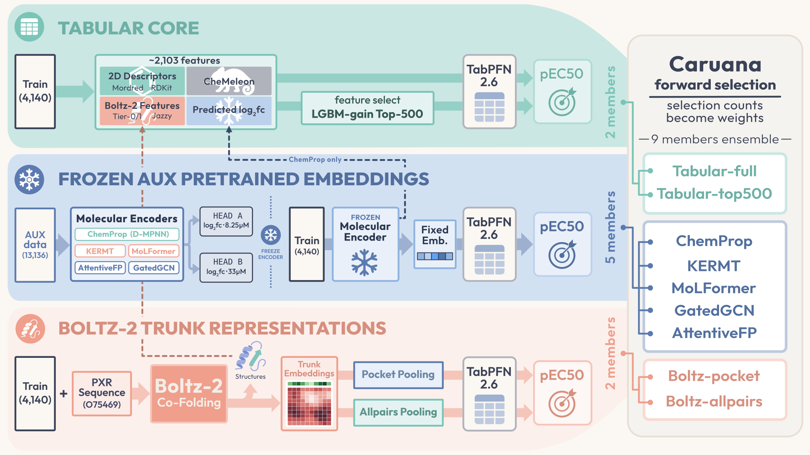
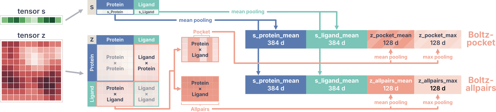

OpenADMET PXR Blind Challenge · 2026-04-01 → 07-01
Predicting PXR activation (pEC50) for 513 blinded compounds
Track 1 (Activity) に提出したモデルの、コンペ終了後のテクニカルレポートです。 結論だけならすぐ下の TL;DR で足ります。以降の章では、このモデルをどう組み立て、 どこで間違えたのかを順に追っていきます。
0. TL;DR
- OpenADMET PXR Challenge Track 1 (Activity) で 95 チーム中 4 位（Tier 1）。SMILES から PXR 誘導活性 (pEC50) を予測するタスクで、MAE は interim（AS1 + AS2）が 0.4059、最終の Phase 2（AS2）が 0.4113 でした。
- 勝負を決めたのは multi-fidelity transfer learning（Buterez et al. 2024 に基づく）という発想です。配布データには単一濃度で測った
log2fcの読み出しが補助データとして含まれており、pEC50 ラベルが 4,140 件なのに対して、log2fc は 10,875 化合物で測られています。その log2fc を予測した値が、単独で最強の特徴量になりました。 - その信号を中心に、9 メンバーの Caruana ensemble を組みました。メンバーは大きく 3 種類（tabular core、frozen embed、Boltz trunk）で、どれも TabPFN を readout head に使っています。
- アンサンブルから先で明確に効いたのは、affine calibration 1 つだけでした。Phase 1 終盤の tail gate と Phase 2 でやったことは、ほとんどがノイズか改悪です。どこで手を止めるかを見極められたことが、振り返れば良い判断のひとつでした。
1. The challenge
これは OpenADMET PXR Induction Challenge の Track 1 (Activity) に対するモデルレポートです。 チャレンジの背景・生物学的な文脈・ルール・スケジュールについては、公式のページを参照してください。
このレポートはモデリングの手法と結果に絞っています。探索的データ解析やチャレンジ自体の詳しい説明は範囲外とし、ここでは扱いません。
タスクの概要は次のとおりです。
| Item | Value | Notes |
|---|---|---|
| Target | pEC50 | higher is a stronger PXR inducer |
| Metric | MAE | regression task |
| Training set | 4,140 | labeled compounds |
| Analog Set 1 | 253 | unblinded at the start of Phase 2 |
| Analog Set 2 | 260 | blinded throughout |
| Test total | 513 | AS1 + AS2 |
2. Results
この課題のスコアは、主に 3 回出ています。live leaderboard は提出のたびに 更新されるので、あとから動かない結果と言えるのはこの 3 つです。
Phase 1 final AS1 (253)live LBrank 8
live leaderboard の最終スコア
Interim AS1 + AS2 (513)one-off LBrank 4 / 338
モデルは Phase 1 final と同じ
Phase 2 AS2 (260)no LBrank 4 / 95
最終順位 — AS1 のラベルは Phase 1 終了時に公開済み
順位を付けているのは MAE だけで、他の指標の順位はリーダーボードの値から数えたものです。
最終リーダーボードの全体は、チャレンジの Hugging Face Space（Leaderboard タブ）で確認できます。主催者による記事は Phase 1 の結果とコンペ終了後のまとめです。
3. Strategy
戦略の土台にしたのは Buterez et al. の multi-fidelity 転移学習の論文です。 振り返ると、これにたどり着けたことが、この順位に届いた最大の理由のひとつでした。
The auxiliary data
最初は Train の pEC50 ラベルだけから特徴量とモデルを作っていました。しかし pEC50 のラベルは 4,140 件しかなく、精度はすぐ頭打ちになります。 一方で配布データには、単一濃度のレポーターアッセイ（8.25 µM と 33 µM の log2 fold-change、log2fc）が補助データとして含まれており、こちらは はるかに多くの化合物をカバーしています。この補助信号があること自体は分かっていたものの、 うまい使い方が分かりませんでした。擬似 pEC50 ラベルに変換するといった素朴なやり方は、 精度を下げるだけでした。
- 配布されるのは Train / Test / AUX data の 3 つで、揃っている項目はそれぞれ違います。
- Test は SMILES のみ。実測値が一切ないので、Test で使える log2fc も存在しません。
- log2fc は 2 濃度で測られるので、1 化合物あたり 2 つの測定値になります。
| Dataset | Compounds | SMILES | pEC50 | Emax | counter assay | log2fc 8.25 µM | log2fc 33 µM |
|---|---|---|---|---|---|---|---|
| Train | 4,140 | ✓ | ✓ | ✓ | 2,860 | 2,374 | 2,321 |
| Test | 513 | ✓ | ✗ | ✗ | ✗ | ✗ | ✗ |
| AUX data | 10,875 | ✓ | ✗ | ✗ | 2,359 | 10,752 | 9,527 |
Finding Buterez et al.
頭打ちを破るために、状況（pEC50 が乏しいこと、補助アッセイが潤沢にあること、擬似ラベル化が失敗していること）を そのまま書き出したリサーチ用プロンプトを Claude Code に作らせ、補助信号を活かす方法を尋ねました。 そのプロンプトを ChatGPT Deep Research にかけて出てきたのが Buterez et al. です。
What the paper compares
この論文が扱っているのは multi-fidelity な状況、つまり創薬スクリーニングの階層です。
件数の差は 500 倍以上
論文の問いは、この安い側を、高い側の予測にどう活かすかです。その方法を 6 通り比較しています。
- 1生の LF ラベルを特徴量に足す10
- 2LF モデルが予測したラベルを足す3
- 3ハイブリッド — 学習は実測、推論は予測2
- 4LF モデルの embedding を足す10
- 5LF で事前学習して通常どおり fine-tune0
- 6LF で事前学習し readout だけ fine-tune26
右端の数字は、51 ケース中でその戦略が最良だった回数です。
論文の結論は、生ラベルを足すだけで MAE が 10〜40% 下がり、embedding はそれをさらに最大 10% 上回る、 というものです。ただし効くのは adaptive readout があるときだけで、表現を使った 41 勝のうち 40 がそちら側でした。
Adapting it
ここからが今回の話です。配布データは、論文が想定している設定にそのまま乗りました。
| Fidelity | 今回の対応物 | 件数 |
|---|---|---|
| high-fidelity | Train の pEC50 | 4,140 件 |
| low-fidelity | 単一濃度の log2fc | 10,875 化合物 |
論文と違うのは主に 2 点でした。
- 生ラベルが使えない — test に実測がないので、1と3は最初から選べません。
- LF が桁違いに少ない — 論文は 100 万件以上、今回は 10,875 化合物です。
残るなかから採用したのが 2 と 4 です。
- 2予測値
log2fc_8p25_pred/log2fc_33_predを特徴量に足す - 4log2fc で事前学習した encoder の frozen embedding を渡す
そのうえで、論文には出てこない TabPFN を下流に置きました。Table 2 は、 encoder を同じ ChemProp (D-MPNN) に揃えて下流だけを入れ替えた比較です。
| Downstream | OOF MAE | Spearman |
|---|---|---|
| 4の embedding を TabPFN で読む | 0.437 | 0.807 |
| 6adaptive readout を学習（論文の一押し） | 0.482 | 0.758 |
| 5凍結せず直接 fine-tune | 0.507 | 0.755 |
凍結して下流を単純にするほど良くなりました。枠組みは論文のまま、下流だけ差し替えたことになります。
Predicted log2fc: the strongest feature
戦略 2 の中身です。単一濃度 log2fc を予測する ChemProp モデルを学習し、その予測値 2 列（8.25 µM と 33 µM）を 特徴量に足しました。本レポートではこれを pred log2fc と呼びます。 予測器の作り方は後述の ChemProp のメンバー説明で扱います。
Figure 1 の下段が pred log2fc です。上段の observed より pEC50 との連動が強く （r 0.75 / 0.80 対 0.72 / 0.50）、しかも observed はアッセイが走った化合物にしかありません。 予測に置き換えることで、被覆率の穴を埋めながら信号も滑らかになります。
Figure 2 で他の特徴量と並べても、pred log2fc の 2 列が先頭です。 記述子はどれも単独では弱く、モデルの中では pred log2fc の周りを固める文脈として働きます。
効いているのは精度だけではありません。pred log2fc は構造だけから計算できるので、 測定ラベルを一切持たない Test にも存在します。実測は Test では手に入らないので、 アッセイ由来の信号を採点対象の化合物まで届かせられるのは、予測した形だけです。
How far does pred log2fc alone get? post-challenge
信号の大きさを測るために、あえて単純なモデルをいくつか Train の pEC50 で学習し、 ブラインドが解除された Test（AS1 + AS2）で採点しました。比較先は、 RDKit 記述子一式に対するデフォルト設定の LightGBM です。
| Feature | Model | Dims | MAE | Spearman |
|---|---|---|---|---|
| pred 8.25 µM | linear | 1 | 0.609 | 0.782 |
| pred 33 µM | linear | 1 | 0.571 | 0.746 |
| pred log2fc (both) | linear | 2 | 0.572 | 0.725 |
| Boltz-2 affinity | linear | 1 | 0.747 | 0.602 |
| RDKit | LightGBM (untuned) | 217 | 0.570 | 0.677 |
| Phase 1 submission | ensemble | ~2,100 | 0.406 | 0.834 |
scripts/ablation_baselines.py）。最終行は物差しとして置いた Phase 1 の提出モデルです。pred log2fc は 1 列だけでも MAE 0.57〜0.61 に届き、2 列を素の線形回帰に通しただけで 217 次元の無調整 LightGBM に並びます（0.570）。順位相関ではむしろ上です （Spearman 0.72〜0.78 対 0.68）。いずれも Boltz-2 の affinity スコア（0.75）は明確に上回ります。 アッセイ由来の信号 1 本を予測しただけで、汎用記述子モデル 1 つ分の仕事をこなしているわけです。
4. The ensemble

最終的なシステムは 9 メンバーのアンサンブルです。メンバー間で違うのは 特徴量の作り方だけで、大きく 3 種類に分かれます。
- tabular core — 記述子と pred log2fc を並べた 2,103 次元をそのまま渡す
- frozen embed — log2fc で事前学習した encoder を凍結し、その embedding を渡す
- Boltz trunk — Boltz-2 の内部表現を渡す。log2fc が入らない唯一の系統
readout head は全メンバー TabPFN で、 違うのはその手前だけです。
9 つのメンバーと、以降で使うエイリアスは次のとおりです。
| Alias | Encoder / features | Family | Strategy | OOF MAE | Weight |
|---|
Caruana 重みの大きい順。Strategy は 3 章の 6 通りの番号で、Boltz trunk の 2 つはそのどれでもありません（log2fc を使わないため）。OOF MAE はそのメンバー単独の値です。
CV 分割は UMAP クラスタ分割（Morgan FP + UMAP → KMeans）です。いくつか試したなかで public LB に最も近かったというだけで、 分割として優れているわけではありません。メンバーの統合には Caruana forward selection (Caruana et al., ICML 2004) を使いました。 提出したのはこのアンサンブルそのものではなく、出力に post-hoc な calibration と gate を重ねたものです （6. Calibration）。
How independent are the members? post-challenge
答えは「あまり独立ではない」です。全 36 ペアが 0.81〜0.98、平均 0.88。 同じ log2fc を共有するメンバー同士が高いのは当然として、 log2fc をまったく持たない Boltz trunk ですら他と 0.81〜0.88 あります。 log2fc より強い手がかりが無く、使える情報がそもそも限られている、ということです。
ただしこれは test 予測どうしの相関で、Caruana が重みを決めた OOF の相関ではありません。 OOF で計算し直すと 0.90〜0.99、平均 0.93 になり、Boltz がやや低いという差も消えます。
それでもアンサンブルが効いている理由は、独立な視点を混ぜているからではなく buffer として働いているからです。重みの小さいメンバーを外すと系統シェアが 0.94 まで上がり、 public LB は 0.006 悪化しました。強いが相関の高いメンバー（とくに top500）が予測を支配するのを止めているわけです。 同時にこれは頭打ちの理由でもありました。新しいモデルを作っても高相関で弾かれるか、入れても悪化するターンが続き、 軸足を calibration と gate の工夫へ移すことになります。
5. The members
3 つの family を、エイリアスを使って順に開けていきます。単独 OOF MAE と重みは 4 章の表のとおりです。
5.1 Tabular core (tabular-full, tabular-top500)
重みが最も大きい 2 メンバーは、1 つの特徴量スタックを共有しています。 補完的なブロックを連結した、約 2,103 次元の tabular 行列です。
| Block | Dims | What it is |
|---|---|---|
| Mordred | 1,515 | 2D molecular descriptors |
| CheMeleon | 300 | ChemProp-MPNN foundation fingerprint |
| RDKit | 217 | standard RDKit descriptors |
| Boltz-2 tier-1 | 44 | pocket-level pLDDT / PAE / PDE re-aggregations |
| Boltz-2 tier-0 | 19 | pose, confidence, and affinity scalars |
| pose-Jazzy | 6 | H-bond / hydration on the Boltz pose |
| predicted log2fc | 2 | the pred log2fc columns from Strategy (8.25 and 33 µM) |
CheMeleon
CheMeleon は単独では強くありません（CheMeleon だけを TabPFN で読むと MAE は約 0.512）。 それでもスタックに加えると明確に効き、同じ tabular core の MAE が 0.443 から 0.421 まで改善しました。
ただし、この 300 次元は実装ミスです。本来は CheMeleon 本体の 2,048 次元を使うつもりでしたが、 特徴量を作らせた Claude Code が、事前学習済みの 2,048 次元を未学習のままの 2048→300 射影に 通した値を保存していました。
コンペ後に 2,048 次元で検証したところ、正しく作っていても提出は良くなりませんでした。 単独では OOF が 0.5118 → 0.4983 と改善する一方 Test は 0.5099 → 0.5132 で、 スタックに混ぜた full でも悪化します。詳細は PR #233 を参照してください。
Boltz-2 features
Boltz-2 由来のブロックは 3 種類、合わせて 69 次元です。
| Block | Dims | What it is |
|---|---|---|
| tier-0 | 19 | Boltz が出力する affinity・結合確率・confidence のスカラー値 |
| tier-1 | 44 | トークン単位の confidence テンソル（pLDDT / PAE / PDE）を pocket や ligand 単位に再集約した統計量 |
| pose-Jazzy | 6 | Boltz の pose 上で計算したリガンドの水素結合・水和自由エネルギー（Jazzy） |
top-500 selection
TabPFN は入力の次元数に敏感なので、2,103 列をそのまま渡すのが最善とは限りません。 tabular-top500 は fold ごとに LightGBM gain で上位 500 列だけを選んで渡します （tabular-full はそのまま渡す方）。K を振ると 500〜600 で底を打ち、 MAE が横ばいだったので Spearman が最良の 500 に決めました。
選択に LightGBM を使うと、解釈可能性も少し手に入ります。gain を見れば、何に依存していたかが分かるからです。 gain の約 4 分の 3 は 2 本の predicted log2fc 列に集中し、残りが Mordred と CheMeleon に薄く広がっています（Figure 6）。 要するにこの選択器がやっているのは「pred log2fc の 2 列を残し、あとは記述子で空間を埋める」ことです。
個々の特徴量まで拡大すると、同じ話がもっと鮮明になります。pred log2fc の 2 列が大差をつけて 1 位と 2 位（gain の 52% と 22%）で、
それ以降は単独で 0.4% に届く特徴量すらありません。裾は CheMeleon の各次元と、
SLogP・qed・pose-Jazzy の水和項といった解釈しやすい記述子の混成です。
| Feature | Family | Gain share |
|---|---|---|
| log2fc_8p25_pred | predicted log2fc | 51.6% |
| log2fc_33_pred | predicted log2fc | 22.1% |
| chemeleon_067 | CheMeleon | 0.30% |
| chemeleon_006 | CheMeleon | 0.23% |
| chemeleon_175 | CheMeleon | 0.20% |
| chemeleon_131 | CheMeleon | 0.19% |
| SLogP | Mordred | 0.18% |
| sa | pose-Jazzy | 0.16% |
| chemeleon_002 | CheMeleon | 0.16% |
| qed | RDKit | 0.13% |
| dgtot | pose-Jazzy | 0.12% |
| chemeleon_240 | CheMeleon | 0.12% |
Why both?
単独性能はほぼ同じです（OOF 0.396 対 0.397）。問題は、選択の効果が OOF に限られていた疑いがあることです。 コンペ後に条件を揃えて比べると、top-500 は OOF では 0.3968 と full の 0.4056 を上回る一方、 Test では 0.4327 対 0.4281 で逆転します (PR #233)。 fold ごとの選択そのものが OOF に効いてしまっている、と読むのが自然です。
当時そこまで分かっていたわけではありませんが、両方を抱えて Caruana が重みをほぼ均等に割ったこと （top500 が 0.309、full が 0.288）は、結果としてこのズレに対する保険になっていました。 実際、top-500 側に寄せた入れ替え（id56）は OOF では最良に見えたのに、 public LB を 0.4071 から 0.4135 へ悪化させています。
公開された AS2 ラベルで重みを再最適化すると、同じことが数字で出ます (issue #222)。 実際に使った 0.31 は AS2 最適の 0.33 に近い一方、OOF に合わせて最適化すると 0.84 まで膨らみ、 AS2 は 0.422 まで悪化します。
| Weighting | top500 weight | AS2 MAE |
|---|---|---|
| Our weights (as used) | 0.31 | 0.405 |
| Zero the top500 weight | 0.00 | 0.402 |
| Optimized on AS2 (oracle) | 0.33 | 0.399 |
| Optimized on OOF | 0.84 | 0.422 |
Phase 2 の提出そのものではなく、AS2 ラベルに対する事後のメンバー重み検討です。
5.2 Frozen embeddings (ChemProp, KERMT, MoLFormer, GatedGCN, AttentiveFP)
この 5 つは、戦略 4 を backbone を替えて横展開したものです。 log2fc で事前学習した encoder を凍結し、取り出した固定長ベクトルを TabPFN に渡す （Adapting it）。encoder を pEC50 で fine-tune しないほうが良かったことは、 同じ節の Table 2 のとおりです。
ChemProp
ChemProp はこのレシピの原型で、embedding 系では最強のメンバーです。 しかも二重に効いています。同じ「log2fc を予測する ChemProp」が tabular core の pred log2fc 列を生み、その D-MPNN から取り出した 256 次元の frozen embedding が このメンバーになっているからです。同じ信号を、鋭い prediction と広がりのある representation の 2 通りで入れていることになります。
事前学習は、濃度ごとの回帰ヘッドを 2 つ持つマルチタスクです。13,136 化合物すべてを使い、 欠測はマスクします。ハイパーパラメータは Optuna で探索しますが、 目的関数は log2fc の損失ではなく下流の pEC50 OOF MAE です。
pred log2fc を鋭くしたのは seed averaging でした。複数シードで事前学習して予測を平均し、 5 → 10 シードで下流が改善（top-500 の OOF MAE 0.399 → 0.397）、15 シードで頭打ちになったので止めています。
なお Table 2 の OOF は、frozen レシピの優位を過大に見せていました。 pEC50 で直接学習した ChemProp は OOF では約 0.53 と弱いのに、 Test では約 0.48 と、frozen embedding メンバーの 0.44 にかなり近づきます。 勝敗は変わりませんが、差は OOF が誇張していたわけです。
Foundation encoders: KERMT & MoLFormer
同じレシピを、より大きな事前学習済み backbone に適用したものです。
- KERMT — graph transformer。 log2fc で継続事前学習して 3,200 次元の embedding を得ます。embedding 系では 2 番手（0.448、重み 0.111）。
- MoLFormer — SMILES transformer （DeepChem MoLFormer-c3）。log2fc に対して LoRA で事前学習し、凍結した 768 次元の [CLS] ベクトルを使います （0.475、重み 0.040）。
同じレシピを通しても採用に至らなかった backbone もあります。ChemBERTa は OOF 0.53 前後、 UniMol-v2 は約 0.484 と残ったメンバーに迫る水準まで来ましたが、 どちらも Caruana の add-value 判定を通りませんでした。MoLFormer-XL を pEC50 に直接 fine-tune する路線も 0.529 と弱く、ここでも ChemProp と同じ結果です。
Extra GNNs: GatedGCN & AttentiveFP
同じ frozen レシピを、さらに 2 つの GNN backbone に適用したものです。いくつも試したなかで 成績が良かった 2 つ、というだけで、アーキテクチャ自体に意味はありません。 単独では弱く（0.474、0.484）、重みもごく小さい（0.018、0.002）です。
それでも残しているのは buffer だからです。約 0.02 の重みを削るとコア側で約 0.1 の増加に 増幅され、4 章のとおり LB が悪化します。重みが小さいことは、外して安全であることを意味しません。
5.3 Boltz trunk (Boltz-pocket, Boltz-allpairs)
この 2 つが使うのは Boltz-2 の trunk、つまり内部の学習済み representation で、予測構造は使いません。
当初は PXR（UniProt O75469、434 残基）を各リガンドと co-fold し、ポーズや affinity スコアから 活性を読むつもりでした。そちらは期待外れで、tabular core の弱い列として残るにとどまります（Table 4）。 そこで representation としての活用を考えました。
trunk の s と z を、化合物あたり 1,024 次元に
プーリングして TabPFN に渡します（Figure 7）。2 メンバーの違いは z に入れる範囲だけです。
- Boltz-pocket — 固定 13 残基の core pocket × リガンド原子
- Boltz-allpairs — 434 残基すべて × リガンド原子

s と z を 1,024 次元に落とすまで。s ブロック（768 次元）は 2 メンバーで共通です。
プーリングは 20 通り以上試しましたが、効いていたのは z のペア表現でした。
128 次元の z だけで 0.490 と、全部入りの 0.486 に肉薄します。一方 s は 768 次元あっても 0.507。
リガンド単体の形より、残基とリガンド原子の関係が効いているわけで、
Boltz-2 自身の affinity module がペアを重視する設計とも符合します。
対して、どの残基で pool するかはほとんど効きません（pocket と allpairs で MAE の差は 0.001 以内、どちらも約 0.486）。
trunk の各次元には解釈可能な名前がないので、非線形な readout が効きます。 同じベクトルに対して TabPFN（0.486）が LightGBM と MLP（0.512、0.538）を上回りました。
一歩引くと、この 2 つは 9 メンバーで唯一 log2fc を持たないメンバーです。 他のすべてを支えている信号なしに、co-fold した構造だけから約 0.486 に届いています。 MoLFormer-XL を直接 fine-tune した路線が 0.529 止まりだったことと並べれば、 構造由来のモデルとしては十分な水準です。
ただし構造が唯一の勝ち筋というわけでもありません。ブラインド解除後の Test では、 スクラッチ学習の ChemProp が約 0.484 に達しています。 それでも、少なくともこの標的では Boltz-2 は予測構造や affinity として使うより、 学習済みの representation として読むほうが価値がありました。
6. Calibration and the final tail gates
アンサンブルを組み終えた時点で残っていたレバーは 2 つ、出力の calibration と、 特定の失敗モードに対する tail gate 群でした。正直にまとめると、明確な勝ちが 1 つ、あとは横ばいです。 アンサンブル予測に対する単純なアフィン calibration は public リーダーボードで実際に効き、 素の Caruana ブレンドを約 0.441 から 0.4154 まで下げました。 さらに seed 拡張したメンバーを取り込んだことで 0.4078 まで到達しています。 それ以降、id51 から id55 にかけての tail gate 群は、どちらに転んでも MAE 0.004 未満の動きしかなく、 calibration の効果に比べればノイズです。id55 がわずかな差で Phase 1 の anchor になりました。 その後もいくつか試しています（Optuna で調整したメンバー入れ替え id56、緩めた potent gate id57、 combo gate と高活性 gate のランク版 id58・id59）が、どれも id55 を超えられず、 結局まったく同じモデルを id60 として再提出して Phase 1 を終えました。これが最終エントリです。
ここでいう calibration とは、アンサンブル自身の出力に対する事後回帰のことです。
素の予測 pEC50 から補正後の pEC50 への 1 次元の写像を、
4,140 件の OOF 予測と真のラベルの対で当てはめます。傾き正のアフィン当てはめ（isotonic 版も併用）で、
calibrator 自体が過学習しないよう 5-fold のネスト CV で検証しました。
実際に採用した calibrated_importance は、これに共変量シフト補正を加えています。
Train の各化合物を密度比 P(test|x) / (1 - P(test|x))（[1/3, 3] にクリップ）で重み付けし、
Test に似た Train の点を重く見るようにしたものです。
平たく言えば、予測レンジの圧縮をゆるやかにほどき、テスト分布側へ傾けています。
この 1 手が、アンサンブル後で唯一明確な改善でした。単独では 0.4414 から 0.4154 まで、
素のブレンドから seed 拡張メンバーが到達した 0.4078 までの道のりの、およそ 4 分の 3 にあたります。
ここから先はコンペの手さばきであって、研究ではありません。id51 から id55 の調整は、 ほとんど public リーダーボードを見ながらの作業でした。メンバー入れ替えや gate を試し、提出し、 スコアが下がれば採用する、という具合です。最終 anchor は短いレシピに展開できます。 2 つの編集ではなく、id51 の上に載った 1 つの gated blend です。
id55 = id51 + 0.35 * soft_gate(nn_tanimoto_to_potent46 >= 0.40)
* (seed10_top500 - ens_caruana_bag20)「top500 の入れ替え」と「potent-46 の持ち上げ」は同じ 1 項です。 2 つのアンサンブルの差分を、gate が開くところにだけ適用しています。 gate 抜きでメンバーだけを入れ替えた提出は存在しませんし、個々のつまみの値に科学的な面白さもありません。 この期間の全体は下表のとおりで、見てのとおり横ばいです。
| id | Change | Public-LB MAE |
|---|---|---|
| id50 | internal-decorrelation blend | 0.4092 |
| id51 | meta-axis anchor over id50 | 0.4073 |
| id52 | re-pooled Boltz trunk swap | 0.4087 |
| id53 | trunk core-only variant | 0.4106 |
| id54 | id51 + potent gate | 0.4096 |
| id55 | id51 + gated top500 blend, soft potent-46 gate (anchor) | 0.4071 |
| id56 | Optuna-tuned member swap | 0.4135 |
| id57 | softer potent gate (g50) | 0.4074 |
| id58 | combo gate rank | 0.4075 |
| id59 | high-activity lift rank | 0.4077 |
| id60 | id55 resubmitted unchanged, final Phase 1 entry | 0.4071 |
Phase 1 期間中の public LB MAE（AS1、253 化合物）。id60 が id55 と同じスコアなのは、同一ファイルだからです。上の順位表に出てくる 0.4059 は、のちの AS1 + AS2（513 化合物）に対する暫定採点であり、評価対象が異なります。Spearman が、このモデルがライブ板で保っていた約 0.845 ではなく 0.8343 と読めるのも同じ理由です。
どれをもってしても直らなかったのが tail です。最も強力な化合物（pEC50 ≥ 6）は 系統的に過小予測されます。モデルはそれらを平均方向へ 1 log 単位近く縮めてしまい （その区間でのバイアスは約 -0.8）、大域的な calibration では届きません。 分かりやすい手当て（強力化合物の持ち上げ、log2fc・環数・ファミリーギャップによる記述子 gate）は試しましたが、 public リーダーボード上ではどれもノイズと区別がつきませんでした。 tail は、Phase 1 で本当に未解決のまま残った唯一の箇所です。
7. Phase 1 → Phase 2
anchor に戻って Phase 1 を終えたことは、当時は及び腰に見えました。 public リーダーボードでは 8 位前後で、明らかに良い public スコアを出しているチームが複数あり、 おそらくまだ調整を続けていたはずです。しかしその板こそ、追いかけないと決めたばかりのノイズの多い代理指標でした。 そしてブラインドの最終採点では、その自制が報われて 95 中 4 位です。 public リーダーボードに過剰適合しなかったことは、振り返れば Phase 1 の良い判断のひとつでした。
Phase 2 では、同じ勘を働かせようにも安全に押せる場所がほとんどありませんでした。 Phase 2 の Activity は完全にブラインドで、舵にできる public リーダーボードがなく、 いま分かっている AS2 のラベルで見ると、我々が加えた変更はすべて予測を悪い方向へ動かしていました。 Phase 1 の anchor（id55、id60 として再提出）は AS2 で 0.4075。 Phase 2 の変更はそこから一つずつ離れていき、提出した id63 では 0.4123 まで悪化しています。
| id | What it added | AS2 MAE | Δ vs id60 |
|---|---|---|---|
| id60 (=id55) | Phase 1 anchor | 0.4075 | baseline |
| id61 | AS1 labels + top500 AS1-aug blend (α 0.40) | 0.4121 | +0.0046 |
| id62 | + ChEMBL pairrank high-activity gate | 0.4115 | +0.0040 |
| id63 | + composite pairrank/ChemProp gate, α 0.45 (final) | 0.4123 | +0.0048 |
ブラインド解除後のラベルで測った AS2 MAE。Phase 2 には照合できる public リーダーボードがありませんでした。anchor から離れる操作は、どれも誤差を増やしています。
何が悪かったのか、おおむね順番に並べると次のとおりです。
- 公開された AS1 ラベルで再学習し、top500 の AS1 追加学習モデルをブレンドしたこと。 AS2 の予測を新しいモデル側へ引っ張りましたが、ほとんどのメンバーでは AS1 再学習が AS2 をほとんど改善しておらず、結果としてブレンドは主に誤差を持ち込みました。
- tail を捕まえるための gate モデル群。 外部の ChEMBL / 公開 PXR 活性データから、pairrank のランキングモデルと分類モデルを作りました。ペアワイズのランキングで学習する Boltz-2 の affinity head に着想を得たものです。高活性化合物の検出自体はうまくいきました（AUC 約 0.88）が、難しいのはそこではありませんでした。どの化合物を動かすべきかが分かっても、どれだけ動かすべきかは分かりません。そして幅を外したコストは、ランキングで稼いだ分より大きかったのです。
- 低活性側の tail に手を出さなかったこと —— これだけは正解でした。 低い側へのシフトは、外した化合物に当たったときの誤差が大きくなります。だから一度も適用しませんでした。解答が公開されて、その自制が正しかったと確認できました。
これらをまとめたものが、提出した候補 id63 です。
id63 = AS1 rows filled with released labels; AS2 = the id55/id60 anchor blended 0.45 toward an AS1-augmented top500 model, plus a ChEMBL pairrank high-activity gate (+0.15) and a composite pairrank/ChemProp gate (+0.15), with no low-side shift。
結果として、AS2 に対するこれらの操作はすべて逆方向でした。
身も蓋もなく言えば、Phase 1 の anchor 以降、AS2 に対してできたことはすべて事態を悪くしました。 始める前は逆だと思っていたにもかかわらず、です。公開された AS1 ラベルを取り込むのは 悪くなりようがないと感じたので、ブレンド比をわざわざ 0.40 から 0.45 へ上げてすらいます。 何もしないのが正解だった、というのは当時の我々に判断できることではありませんでした。
そしてこれは両刃です。提出しなかった候補
id55shape_t10top500_t40_soft_g35 は、真の AS2 ラベルで 0.4056 に達しており、
優勝スコアの 0.4061 をわずかに下回ります。つまり後から見れば、これを出していれば 1 位でした。
値を動かしすぎており、自前の preflight チェックを通らなかったため、これは見送っています。
逆の極端として、保守的な id60 の anchor（0.4075）をそのまま維持するだけでも、実際に提出したものより良かったはずです。
少しだけ足す、が 3 択のうち最悪でした。そして提出時点では、勝ち筋の賭けと負け筋の賭けを見分ける方法はありませんでした。
ブラインドのコンペで難しいのは、そこです。
コンペ後に走らせた完全な解答照合 (issue #222) は、この点をさらに際立たせます。 リーダーボードを一度も見ずに組んだ機械的な anchor-residual stacker ですら、テスト全体で 約 0.405 に着地し、importance calibration 版アンサンブル（0.407）も、 Phase 2 で実際に提出したものも上回りました。ある地点から先では、上乗せした仕掛けは 得るものより失うもののほうが大きかったわけです。やらないという規律のほうが、二重の意味で優れたモデルでした。
8. Conclusion
実際に勝負を決めたのはモデルではなく、フレーミングでした。 multi-fidelity transfer learning（Buterez et al. 2024 に基づく）にたどり着けたことが、 この提出が機能した理由そのものです。チャレンジのデータには、単一濃度の log2fc 読み出しが 補助データとして含まれており、それを予測できるように学習することで、低 fidelity の信号が 手持ちで最強の特徴量に変わりました。持ち帰る価値のある教訓をいくつか挙げます。
- 安価な活性データは過小評価されている。 低コストの単一濃度アッセイを pEC50 モデルの背骨に変えるという発想は、実際のスクリーニング現場にこそ効くはずです。そこではノイズの多いハイスループット測定が潤沢にあり、ゴールドスタンダードのラベルは希少だからです。
- 生の信号を使うこと。 データにもともと含まれるアッセイから直接作った predicted log2fc 列は、単独で見ればどの設計記述子よりも、どの基盤モデルの embedding よりも強力でした。直接関係する測定値が存在するなら、汎用特徴量に手を伸ばす前に、まずそれをモデル化するべきです。
- TabPFN は readout head として実力以上に働く。しかも唯一というわけでもなく、同じベクトルに対して LightGBM も、本レポートにはほとんど登場しなかった KAN readout も強力でした。
- 予測構造と affinity は期待外れだった。 Boltz-2 のポーズと affinity head は、そのまま使うにはノイズが多すぎ、representation として読んで初めて元が取れました。実際の活性予測において、既製の affinity モデルは最も弱い環でした。構造ベースの仕事をするときに覚えておく価値のある注意点だと思います。
個人的な話をすると、これは私にとって初めてのコンペで、95 中 4 位は始める前に期待していた以上の結果でした。 振り返って印象に残っていることが 2 つあります。1 つは、文献探索・コード・反復のいずれでも AI コーディングエージェントと ChatGPT に大きく頼り、そのワークフローから多くを得たことです。 これについては別の場所できちんと書きたいと思っています。もう 1 つは、 この全体が個人の家庭用ゲーミング PC 1 台だけで、しかも 1 人で回っていたことです。 95 チーム中の Tier 1 という結果に対して、これは今でも少し理不尽に感じます。
最後に、PXR Induction Challenge を運営してくださった OpenADMET チームに心から感謝します。 本当によく設計されたベンチマークでしたし、終了後にデータとブラインド解除済みのラベルを公開してくださったからこそ、 この事後検証も、本文中の率直な答え合わせも可能になりました。ありがとうございました。
Reproducibility and links
- 作業リポジトリ（コード、特徴量パイプライン、日々のログ）: N283T/pxr-iduction-challenge
- Phase 1 の研究ログ（日次、一部日本語）: issue #100
- Phase 2 の研究ログ: issue #208
- コンペ後の AS2 答え合わせログ: issue #222
- チャレンジページ: openadmet/pxr-challenge
- データ: openadmet/pxr-challenge-train-test
これはレポート専用のリポジトリです。docs/assets/data/ 以下のチャートデータは
scripts/build_report_data.py で再生成されます。
生の特徴量行列、チェックポイント、予測プールの全体は意図的に含めていません。